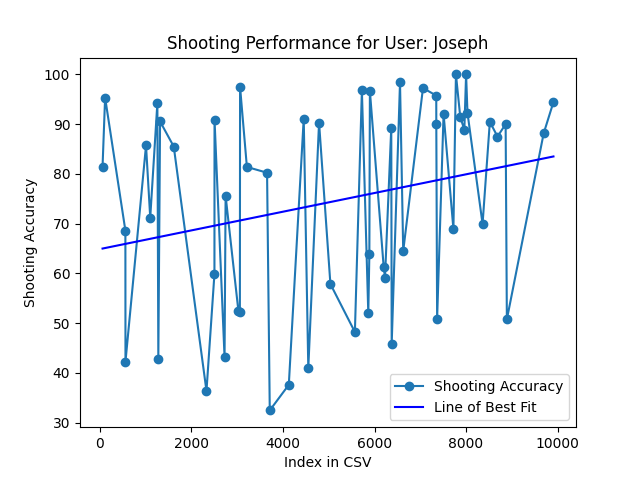
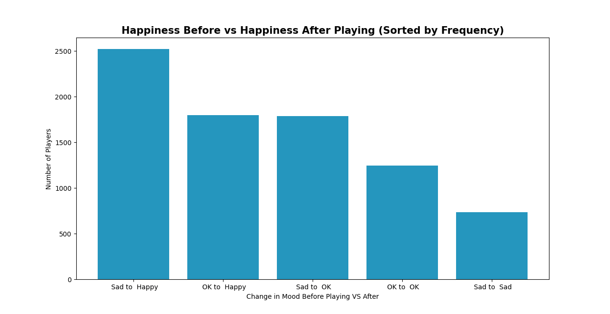
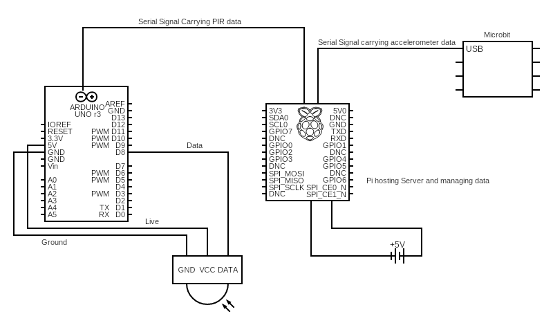

Improving users well-being in the best way possible, Basketball!
The Video
Meeting the Brief
Basic Requirements
The system is fully automated once it receives data from the user, and all redirects are done
without
user intervention as is sensor data recording.
The system uses both digital inputs and outputs as well as analogue inputs and outputs.
Inputs
Analogue - PIR Sensor which detects movement of the basketball under the rim.
This
will serve to
keep track of the score
Digital - Within the User Interface which will track user happiness, the user
enters their name and
their current happiness
Outputs
Analogue - The Micro:Bit Beeps when a shot is detected.
Digital - The user’s shot data is displayed live on the user interface.
Validate the data
The data is validated in numerous places, firstly when the user enters their name it is
ensured
that there isn’t nothing entered in the space.
There is also a break between shot detections so a single shot doesn’t register multiple
times.
My 2 What Ifs? were
What if the user shoots more, will their aim improve?
What if a user exercises, will it improve their mood before versus after?
Note: Due to difficulty of gathering large amounts of data the majority of data is simulated, see
(simulation.py)
Advanced Requirements
The model I generated based on the user’s data is a Linear Regression based model which constructs a
line of best fit to predict the user’s wellbeing based on the what if questions
The multiple descriptive features of wellbeing used included, duration which the user plays for,
their
mood before, mood after and shooting accuracy.
Responses to the What If questions
What if the user shoots more, will their aim improve?
As users shoot, their aim improves, this doesn’t necessarily improve each time, but overall,
the
users aim improves with each use. This is proven by the linear regression plot shown below.

What if a user exercises, will it improve their mood before versus after?
To model this I asked the users happiness before and after they exercised. I then graphed the
5
most common results of happiness before vs after. These can be seen below.

Investigation
Wellbeing is present when a person realizes their potential, is resilient in dealing with
the normal stresses of their life, takes care of their physical wellbeing and has a sense of
purpose,
connection and belonging to a wider community. It is a fluid way of being and needs nurturing
throughout
life.
Some ideas I debated using were a movement Tracking based game, a system to monitor and grow your plants
and a run tracker. After some consideration I settled on my idea, a system which can transform your dumb
basketball hoop into a smart one. It does this by using a sensor array to track how many shots you make
and miss and then display it to the end user. Exercise is not only shown to boost physical health, but
mental health too, overall improving user wellbeing
The main element of my design was that the basketball hoop would show you your score and accuracy. I
wanted to research how some other solutions in other industries do it. Some standout companies I saw in
my research were Huupe and dribbleup
Huupe sell a smart basketball hoop, though this is similar to what I want it is a fully contained smart
basketball hoop, whereas I want a smaller system which can be deployed onto any hoop. The Huupe uses a
sensor array mounted at the top of the hoop to detect shots. Though I think the system is really cool,
it costs $10,000, which makes it inaccessible for many, myself included.
A Huupe PRO
The DribbleUp is a system which uses an iPad app and a brightly coloured ball with some key points on
it, to detect and track movement. It is largely for dribbling drills; however, I found the techniques
used for tracking interesting.
My Target end user is anyone who wishes to improve their basketball shooting and physical health. I hope
to make this a quick to deploy and easy to use solution. I sent a survey out to my school and received
33 responses. When questioned about excercises effect on mental health potential users overwhelmingly
agreed that excercise improves mental health. Additionally 63% of potential users say they would use the
product. This gave me insights to go forward with development.
Plan and Design
My initial design centred around ease of use for the user. The first design centred around using a camera
similar to Huupe. I created a prototype which tracked blobs of orange pixels (which is what a basketball
would be). I however determined that detecting whether it had gone in the hoop or just hit the backboard
would be difficult. It would require a large amount of compute and would be far less accurate. This led
to me pivoting to using a sensor array. The sensors I used were an accelerometer and a PIR (Passive
Infrared sensor).
The accelerometer allows me to detect when a shot has been taken, this would be secured to the backboard
of a basketball hoop. The PIR which is placed under the rim detects when a basketball passes through the
rim, thus showing when someone scores. To display user data in real time, I opted to write a server
which serve a webpage and poll it’s API every few seconds to get updated shooting data. A user could
then access this on any of their devices from their smartwatch to their desktop. Additionally, this
server would manage datalogging of the user’s name, happiness and shooting metrics. This would allow me
to carry out data analysis later on. To manage the PIR, I opted to use an Arduino UNO, as it was what I
had on hand, and made testing far easier than if I were to use a Pi to control the sensor. I
additionally opted to use a Micro:Bit as the accelerometer as the school didn’t have any accelerometers
on hand and I did not want to order one when the Micro:Bit has an accelerometer in it. Both the Arduino
and Micro:Bit were then configured to send an update to the main computer over Serial via USB which
would act both as the data logger and the webserver. For the main computer I chose a Rock Pi 5 16GB. I
chose this as it has a good processor which can handle the multithreaded workload in addition to it
having the necessary ports. Initially however when performing testing I utilised a laptop to read the
serial interfaces.
For programming, I utilized VS Code as well
as the
Arduino IDE. The web server, written in
Python,
was developed using Flask
along with
Flask CORS. The webpage to
display
the data was created using HTML and CSS for visuals, with basic JavaScript handling API requests to and
from
the web server.
The Micro:Bit was programmed in MicroPython, utilizing the
Micro:Bit MakeCode editor for compiling. A
small
amount of Arduino code was written in C++. Source control for the project was managed using
GitHub.
Sketched Design

Flowchart
Create
Create Log
📅 Week 1: Introduced to project brief. Looked
at
some possible ideas and datasets.
📅 Week 2: Decided on an idea. Did research
into parts,
sketched some possible designs
📅 Week 3: Began writing introduction and
looking at
sensors
📅 Week 4: Partook in an LCCS Hackathon,
focused on
user centric design.
📅 Week 5: Wrote the prototype for the Orange
Blob
Tracking
📅 Week 6: Pivoted from Orange Blob Tracking to
sensor
array, further researched sensors
📅 Week 7: Began writing the initial serial
code. Also
designed and created a prototype for the web interface
📅 Week 8: Focused heavily on programming
sensors.
Found out the PIR was broken during testing. Ordered a new PIR
📅 Week 9: Programmed web interface. Received
new
sensor. Created a version of the project ready for testing
📅 Week 10: Tested the Project and began a full
draft
of the report. Filmed some of the video.
📅 Week 11: Edited Video, finished drafting the
report
and made the website
📅 Week 12: Made the website more user friendly
and
edited the report. Tidied and commented final codebase. Prepared the files to be submitted
Testing
To unit test my design, I broke testing into the systems subsequent components. Initially, to test the
webserver, I ran the webserver and attempted to enter bad values, or no values into the fields. This
will
prompt the user to enter their credentials before they are allowed to continue. As for the server, I
updated
it during testing to run without the sensors attached and give an informative error message as opposed
to
just crashing. To test the sensors, I used them on a test bench, externally from the court, testing
ranges
and repeat radius and timings. Overall testing played a pivotal role in the development life cycle, as I
repeatedly tested the product during development
A Code Walkthrough
def read_microbit():
while True:
microbit_line = microbit_ser.readline().decode('utf-8').strip()
if "1" in microbit_line:
print("MICROBIT COMMS: ", microbit_line)
global shots, last_5_shots,score
shots += 1
current_score = score
time.sleep(4) # Wait 4 seconds
if current_score < score:
print("Shot Has been made")
last_5_shots.insert(0,{"result": "made"})
else:
print("Shot has been missed")
last_5_shots.insert(0,{"result": "missed"})
# Ensure we only deal with the last 5 shots
if len(last_5_shots) > 5:
list.pop()
This is arguably the most important piece of code in the project. Initially it reads and cleans data from
the serial port. It then checks if the Micro:Bit has been shaken, indicating whether or not a shot has
been taken. If the Micro:Bit has detected a shot, it waits 4 seconds to see if the score has increased,
if the score has increased this indicates that the user took a shot and scored it, however if it hasn’t
the user has missed a shot. The result is then added to the last 5 shot list and a 6th item is removed
from the list if it exists.
# Create threads for reading data
arduino_thread = threading.Thread(target=read_arduino)
microbit_thread = threading.Thread(target=read_microbit)
# Start the threads
arduino_thread.start()
microbit_thread.start()
# Runs the server on the main thread
app.run()
Another piece of code which I found interesting was the threading code. This is what allows me to have
multiple processes running in parallel in the one script. I was first required to break the project up
into several functions which were effectively their own scripts. I then assigned a thread to each of the
sensors, the app.run() was then run on the main thread. This was a key element which made
testing much
easier.
The PIR sensor
The primary issue I encountered was getting the PIR sensor to work. Initially the PIR sensor I was using
would go off constantly. I figured initially it was an issue with the code or the circuitry. After
trialling numerous code configurations from trialling different baud rates to different voltages and
even different pin types and pins just to ensure it wasn’t anything mundane, I was still receiving a
constant stream of detections. I then came to the conclusion that the sensor must be broken.
I ordered some new sensors on Thursday of Week 8 and they arrived Tuesday of Week 9. After a short amount
of testing on the same setup as before the new sensor worked! I was then able to go forward and finish
programming the rest of the program logic.
CORS - Cross Origin Resource Sharing
Another issue I encountered was that of Cross Origin Resource Sharing. Initially when handling requests
sent from the site to the server, I was receiving strange errors in regards to something called CSRF.
After some research I found that due to the nature of the requests I was sending to the server in
attempting to log data the server was blocking it to prevent Cross Site Request Forgery (CSRF) in which
a malicious user attempts to send bad data or commands to a site the user trusts. While this would
matter were this site to be available on the open internet, I opted to disable it using a package called
Flask CORS. Cybersecurity was not a concern
for the
development of the project as the project will only be available on the intranet of whatever network the
user is on. So, I then enabled CORS on all routes of the server.
Evaluation
Overall, I thoroughly enjoyed working on this project. Here is an outline of how I met both the basic and
advanced requirements.
Basic Requirements
Once set up, the system will run fully automated, tracking what the user does without any required
input.
The system uses both digital and analogue inputs and outputs. Digital inputs are that of the user’s
name and happiness into the server. While digital outputs are the live shot tracking data displayed
on
the website. Analogue inputs are from the sensors, both the accelerometer and the PIR. Analogue
outputs
can be found on the Micro:Bit when it beeps to indicate a shot has been taken.
User inputs are validated by the user’s website; it ensures that the user doesn’t put in an invalid
name
and ensures that they fill out all fields.
The User data is converted into a graph which is shown in the 2 what if questions below.
Advanced Requirements
The model I generated based on the user’s data is a Linear Regression based model which constructs a
line of best fit to predict the user’s wellbeing based on the what if questions
The multiple descriptive features of wellbeing include duration which the user plays for, their mood
before, mood after, and shooting accuracy.
The project has met the general needs of the user, and the goals with which I set out initially when I
began
the project. The design is cheap and effective. The design is portable and easy to deploy which means
you
can turn any hoop into a smart basketball hoop. One failing for the user is my lack of consideration for
cybersecurity which would undoubtedly need to be amended if I were to build out this product.
To further improve or iterate on this project, I would like to add a few things.
I would alter the device to be based off of a single custom fabricated microcontroller which has the
accelerometer built in with an easily deployable and potentially magnetic PIR sensor to make it easy
to
deploy.
A similarly cheap and portable scoreboard that links with the device and will show the score to the
users as they play a half-court game.
I would like to link it with another device so you could play full court games, and track the score
and
shot accuracy in real time.
I would add player tracking initially for one player so if they were performing a shooting drill
they
could see where they need to practice shooting from on the court.
I would ultimately like to add player tracking for all players on a court so the device could track
each
player's shot accuracy and movement during a game.